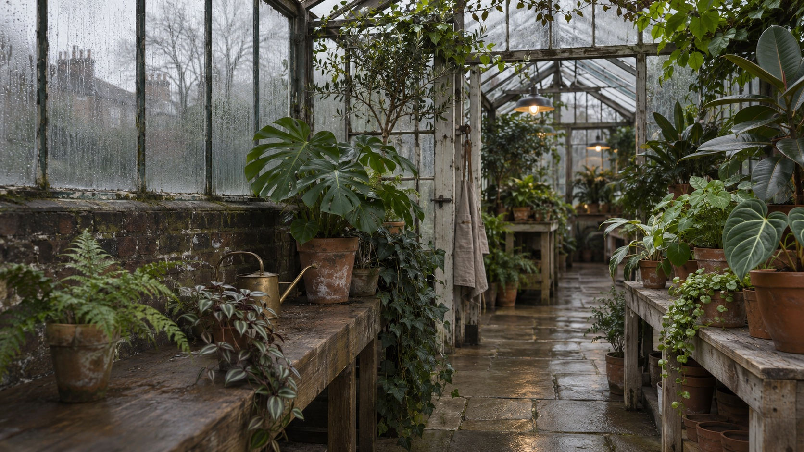
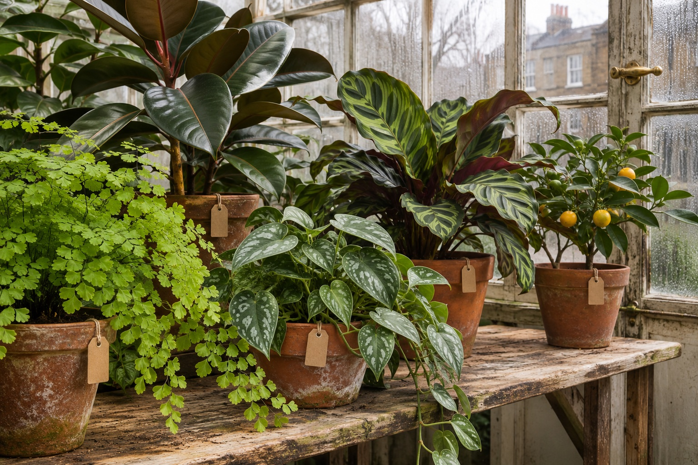
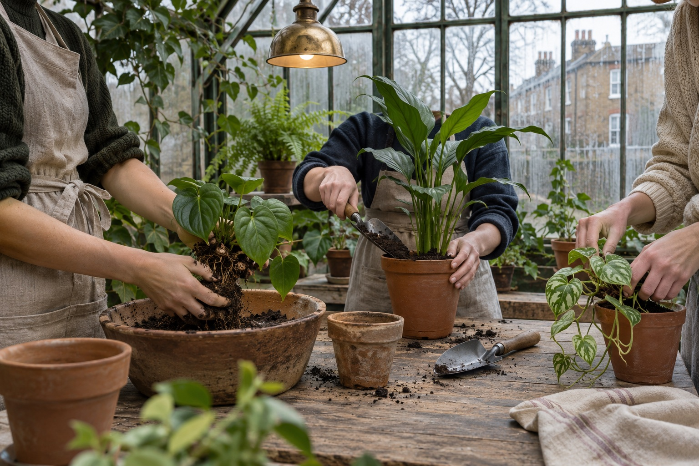
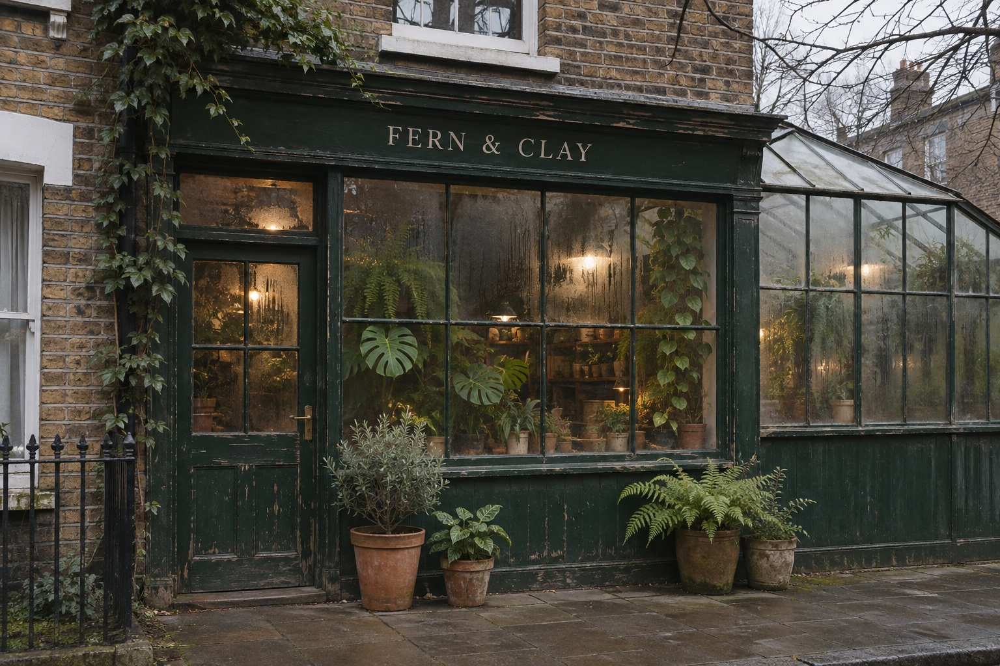

Maidenhair fern
Soft, indirect light · Keep evenly moist

Plant shop & working greenhouse · Stoke Newington
Houseplants, honest care advice and small weekend workshops, all under the old glasshouse roof.
The glasshouse
We grow and acclimatise our stock in the same cool, changeable conditions found in many London homes. Come in with a photo of your room and we’ll help you choose a plant that suits its light, warmth and your weekly routine.
In the greenhouse now
Stock changes as plants grow and sell. Call before travelling if you have one in mind.

Soft, indirect light · Keep evenly moist
Low to bright indirect light · Easy-going
Bright indirect light · Water when dry
Filtered light · Likes steady humidity
Each plant comes with a handwritten care card. Nursery pots are included; terracotta cover pots start at £8.
Practical plant care
Drop in with the plant, a leaf cutting or a few clear photos. We’ll check for pests, watering problems and root stress, then give you a short plan to follow at home.
Send a plant photoTen minutes at the care desk. Free, no booking needed.
From £8 plus compost and pot. Leave larger plants with us for collection.
Simple self-watering setups from £12; ask at least a week before you go.

At the potting bench
Six places per session. Tools, materials, tea and a plant to take home are included.
Sat 28 Nov · 10am
Light, watering and choosing the right compost.
Sat 5 Dec · 3pm
Cold windows, dry radiators and slower watering.
Sat 12 Dec · 10am
Take cuttings, root them and pot up two starters.
Across the neighbourhood
We deliver to N16, N1 and E5 on Tuesdays and Saturdays. Delivery is £6.50, or free when you spend £50. Orders placed by 2pm the day before are eligible for the next round.
We carry plants to your door and bring reusable crates back with us. For anything taller than 1.2m, call so we can confirm access first.
Arrange local delivery
Come by the greenhouse
Seven minutes’ walk from Stoke Newington station. Cycle stands are beside the mews entrance; step-free access is available through the side gate.